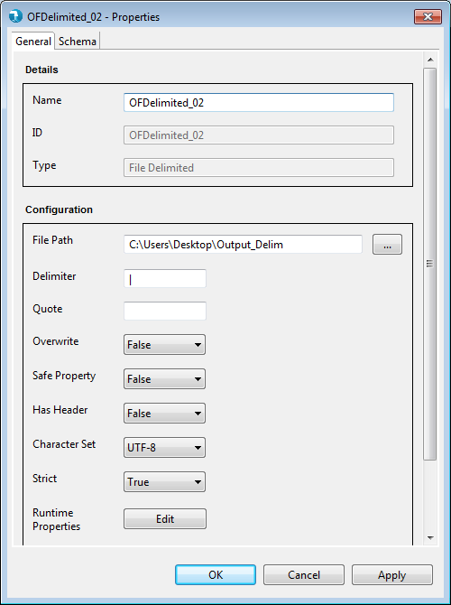
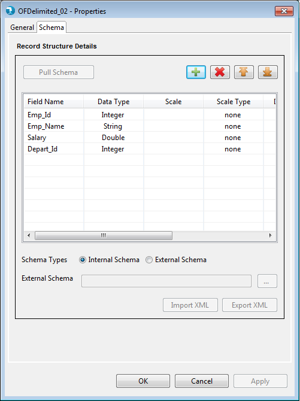
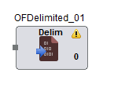
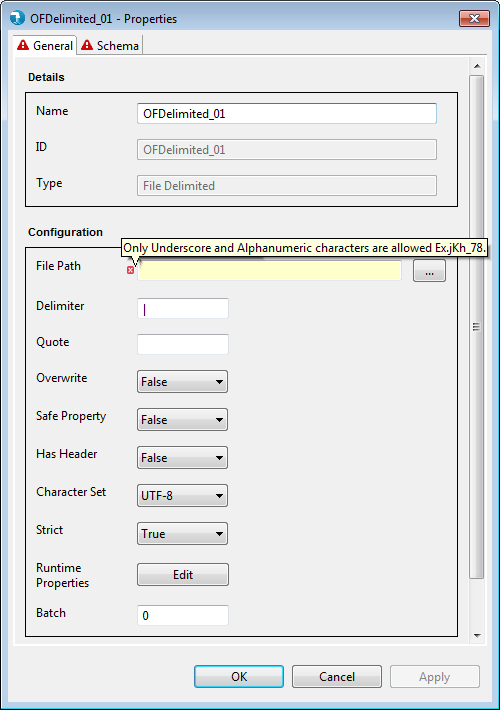
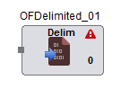

Properties for the Output File Delimited component can be viewed by Double click->component on canvas. The properties contain a 'General' tab and a 'Schema' tab. Common and mandatory properties are present in the General tab. Schema displays option to accept the field schema i.e. field name, Data type, scale etc.

- Name - The Name field will specify the name of the component as desired by the user.
- ID - ID field will specify unique id for every component.
- Type - Type further categorizes the component to detailed operation that it intends to perform. Here it is of type Output File Delimited.
Configuration

Schema Types
- Internal - User is provided a Grid to enter the internal schema of the Output Delimited file.
- Field Name - User needs to enter all the Field names in this column.
- Data type - By default "string" Data type has been selected for any field added to the Grid. User can select from different Data type values like "integer", "double", "float" etc.
- Date Format - User can specify desired date format like "YY-DD-MM", "YYYYMMDD" etc for a date field in this column. Refer to Date formats page for acceptable date formats.
- Precision - Precision for a bigdecimal field can be specified here.
- Scale - Scale for a bigdecimal field can be specified here.
- Scale Type - Scale Type accepts values as implicit or explicit for bigdecimal field and none for other data types. Explicit considers the length of ' . ' and implicit ignores length of ' . ' for the bigdecimal field.
- Field Description - User can specify field description.
- External - User can provide an external Hydrograph Schema file of XML format. A text box is provided to either manually type or use the Browse button to select the schema file from File system. The External schema file path is resolved during run time and replaced with the contents of the file in the Job XML.
The Output File Delimited components applies validations to the mandatory fields. Upon placing the
Output File Delimited component on job canvas for the first time (from component palette), the component shows up a warning icon as
mandatory properties are not provided.

The properties window also displays error icon on mandatory fields if it has an incorrect value. The error icon
is displayed on the tab as well, if any of the field within the tab has some error.

If the properties window has some error even after user visit's it once, then the warning icon on the Output File Delimited
component on the job canvas changes to error icon. This error icon is removed only when all the mandatory fields are supplied
with correct values.
